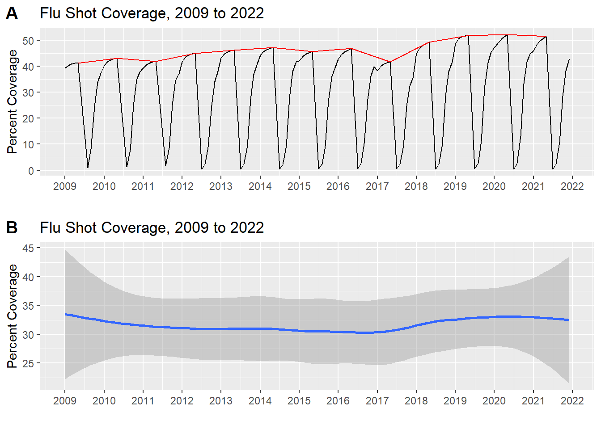
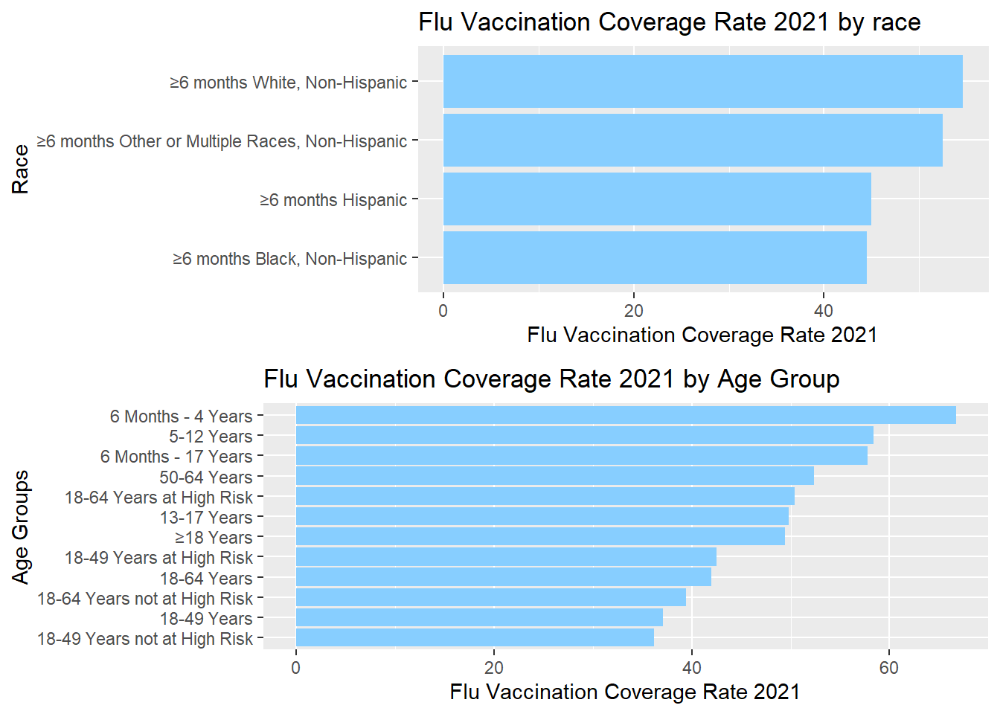
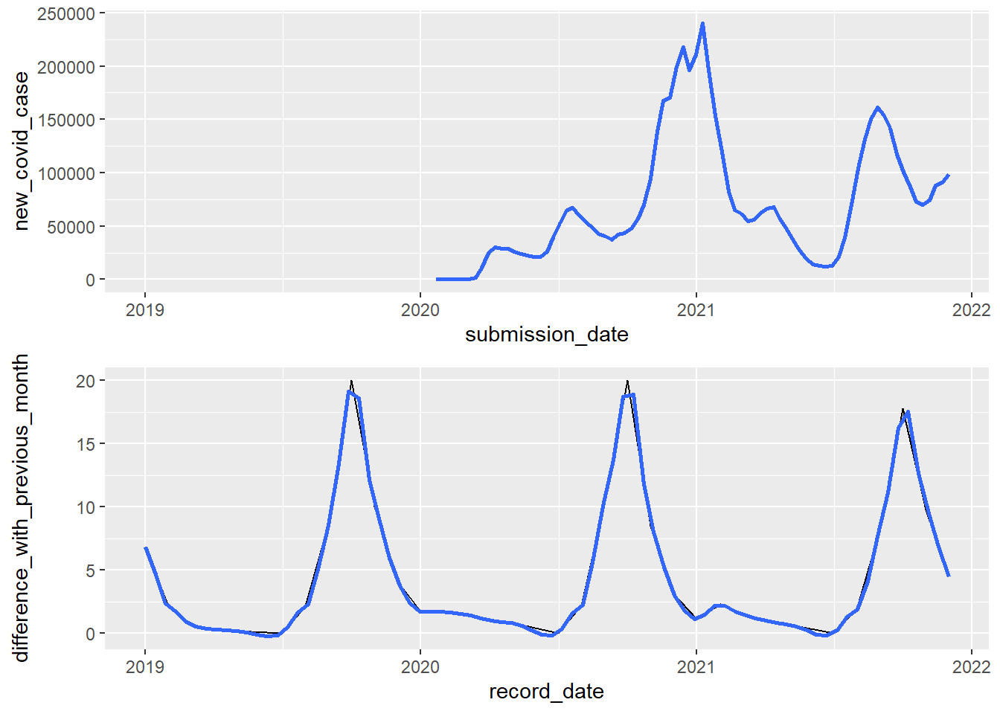
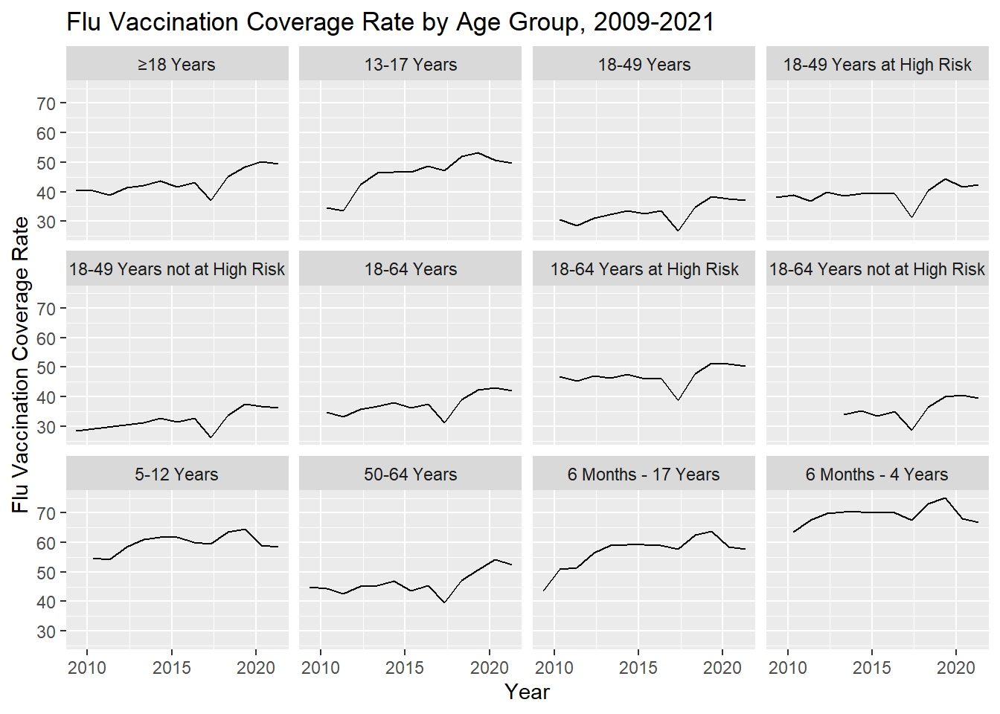
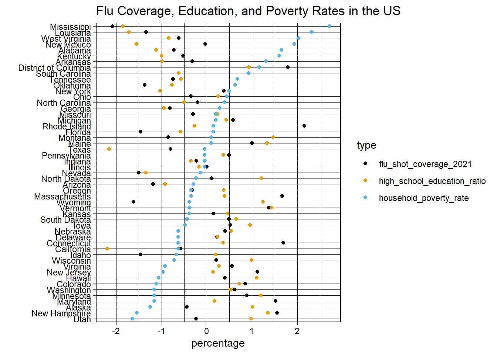
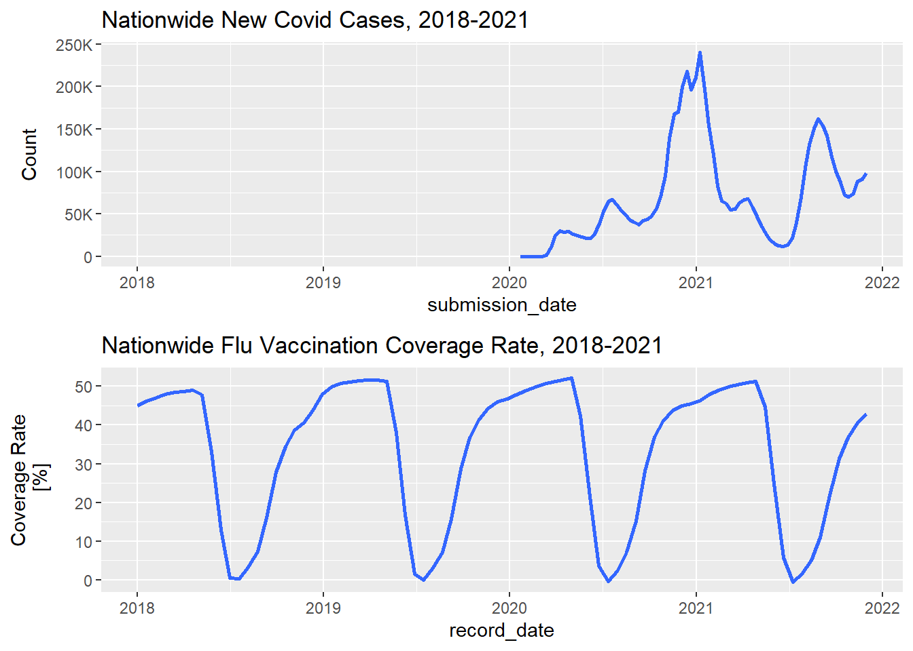

Chapter 4 Results
4.1 Geographical Patterns
First, we created a choropleth map using color to indicate the value of flu vaccine coverage rate within United States by state for 2021 and check if there exist some geographical patterns for the distribution of flu vaccine coverage rate.
 We noticed that the areas with high vaccine coverage are mainly in the Midwest, Northeast and Mid-Atlantic regions of the United States. According to a CDC report, flu season usually occurs in the fall and winter in the United States. While influenza viruses spread year-round, most of the time flu activity peaks are between December and February. Thus, low temperatures could be accompanied by high rates of flu infection and thus vaccine coverage rate. Looking at the US map above, Midwest states such as Colorado are located near the Rocky Mountains, with high altitude and low temperatures. The north has a high latitude and a lower temperature than the south. Due to factors such as ocean current and monsoon, the climate in the east is quite different from that in the west coast, and the temperature is relatively lower. Therefore, these regions have relatively higher coverage of flu vaccine. Thus, it appears that the distribution of flu vaccine coverage does have a geographical pattern.
We noticed that the areas with high vaccine coverage are mainly in the Midwest, Northeast and Mid-Atlantic regions of the United States. According to a CDC report, flu season usually occurs in the fall and winter in the United States. While influenza viruses spread year-round, most of the time flu activity peaks are between December and February. Thus, low temperatures could be accompanied by high rates of flu infection and thus vaccine coverage rate. Looking at the US map above, Midwest states such as Colorado are located near the Rocky Mountains, with high altitude and low temperatures. The north has a high latitude and a lower temperature than the south. Due to factors such as ocean current and monsoon, the climate in the east is quite different from that in the west coast, and the temperature is relatively lower. Therefore, these regions have relatively higher coverage of flu vaccine. Thus, it appears that the distribution of flu vaccine coverage does have a geographical pattern.
Another explanation for this pattern could be patterns of political history. Southern states, leaning more right on the political spectrum, may be less inclined to get a flu shot, whereas Northeast states that tend to vote more liberally would do otherwise, which supports the distribution of coverage we see. We will continue to explore these geographic trends as our analysis continues.
4.2 Flu Vaccination Coverage Time Series Patterns
Next, we performed a time series analysis on nationwide flu vaccination coverage from 2009 to 2022 using the clean us_by_year data mentioned in the data section. Notice that the flu vaccination coverage dataset gives the cumulative flu shot coverage from last July or August. For example, the coverage rate in March 2021 is the overall coverage rate from July 2020 to March 2021. Also notice that the content of seasonal influenza changes every year, so every year there is a sudden drop in coverage rate (probably in June). We presume the lack of June data indicates a “reset” of the vaccine during the summer, where the new vaccine is developed for the upcoming winter’s flu strain. The red line in Figure A below shows the highest coverage rate of that year.

Based on the above two plots, one can observe that the overall trend of nationwide flu vaccination coverage rate is increasing (the red line follows the overall coverage rate of each year), from about 42% in 2009 to about 52% in 2021. Notice there is a conspicuous drop in 2017 which could be explained by a report by the University of Minnesota. This states that a severe flu season the previous year caused a drop in vaccine coverage, perhaps due to distrust in vaccines. After 2017, we notice a more or less remarkable increase in flu vaccination rate. We will zoom into the 2018-2022 range in later sections to explore its potential correlations with the COVID-19 pandemic.
Speaking of the patterns for each year, from July or August the coverage rate quickly increases (concave up), and then slowly decreases (concave down) from about December to April of the next year which matches our intuition: those who want to receive flu shots will do it as soon as the new flu shot is released, and fewer people will take flu shots before a new type of flu shot will come out in May or June.
4.3 Demographic Patterns
Next, we will relate flu vaccination coverage rates to demographic data.
4.3.1 Race and Age Groups: 2021
We will look at the 2021 data (the latest flu data we have). We plot flu vaccination coverage rates with respect to race groups and age groups.

For race groups, we see that in 2021, the white race group has the highest flu vaccination coverage rate, reaching about 53%. The group of other races (unfortunately we cannot be more specific about which races it contains due to the limitation of the dataset) is the second most covered group, also reaching over 50%. The Hispanic race group is the second least covered group, with coverage rate about 44%, and the Black race group is the least covered group, with coverage rate a little less than the Hispanic race group. This kind of pattern of flu coverage with respect to race groups may be intertwined with other socioeconomic phenomena and issues of healthcare access.
If we use >=6 months as a baseline group, we can see that the older the age group is, the less coverage rate that group receives. Age groups with 13-17 years old and 18-64 years old are below the baseline coverage rates, and the coverage rates for 6 months-4 years old and 5-12 years old groups are well above the baseline group coverage rate. We notice that children receive more flu vaccine coverage (reaching about 64%) than teenagers and adults, and that is probably due to the fact that children are more susceptible to seasonal influenza, as stated in this article. Therefore, parents might be more likely to force their children to receive the vaccine for protection.
4.3.2 Races and Age Groups: A Time Series Analysis
We performed a time series analysis from 2009 to 2021 in race and age groups to see if there exist abnomalities similar to what we see in Simpson’s Paradox.

We see that these race groups follow the same trend as the overall population, as we see in previous sections. We can observe that there are drops in flu vaccination coverage rates in the year 2017 in all four race groups as well.
Notice that for the White, Non-Hispanic group, the rebound (increase) after 2017 is stronger than other race groups (the rebound is about 13%, from ~42% in 2017 to ~55% in 2020). For Other or Multiple Races, the rebound is not as strong as the white race group. For Hispanic and Black race group, the rebound is even weaker; for the Hispanic race group, we can hardly see a pronounced increase in coverage rate post-2017 as compared to pre-2017. However, these conclusions are only due to visual inspection; we would like to perform some statistical analyses to justify these claims.

The age groups time series pattern also follows the general pattern discussed before; moreover, it follows the 2021 age group pattern. Generally speaking, the older ages the group contains, the lower the flu rate coverage rate is over the years.
A pronounced point in these plots is that for 13-17 years group, the coverage rate is equal to or even lower than the 18-64 years group in 2010, but it increases in the following years and exceeds the coverage rate for 18-64 years group.
4.3.3 Socioeconomic Data: Finding Important Factors with Biplots
Next, we drew a biplot based on selected features from demo_df, demographic information in 2021 introduced in the data section, to examine correlations between demographic features and flu vaccination coverage. Variable names are included on their respective axes.

Angles between vectors in biplots tell us about correlations. From this biplot, we can observe that flu shot coverage in 2021 is mostly correlated to the high school education attainment rate in states. Since the household poverty rate forms a large angle with flu shot coverage rate, it is (relatively strongly) negatively correlated with flu shot coverage in 2021. Notice that child_ratio is also similarly negatively correlated with flu shot coverage, but we decided to experiment more on household poverty rate in the next section because there are more states that lie near the household poverty rate axis. Household poverty rate and household wealth rate/median household income have opposite vector axes which matches our intuition about what these variables indicate.
We can also observe state clusters in this graph: states like New Mexico, Alabama, and Kentucky lies at the negative flu shot coverage axis and positive household poverty rate axis, indicating that these states associated with high household poverty rate have less flu vaccination coverage. Other states like Mississippi and Louisiana are more extreme in these variables. States like Colorado, New Jersey, and Hawaii lies at the positive axis of coverage and negative axis of household poverty rate, meaning these states have low poverty rate and high flu vaccinations coverage in 2021. A few interesting outliers exist as well like Utah and West Virginia which fall far away from clusters.
In conclusion, we sort out two of the most important factors that are correlated, one positively (high school education attainment rate) and one negatively (household poverty rate), to flu vaccination coverage in 2021. Next, we will plot these two factors alongside flu vaccination coverage in 2021 to better illustrate the pattern. We also start to see some geographic patterns emerge that match what we found in earlier and what we will explore with our interactive graphic. For example, many Northeast states are found in the lower right quadrant, where coverage is high and poverty is low.
4.3.4 Cleveland Dotplot of Most Important Factors
We used “demo_df” to plot the two factors mentioned above, with data normalized for better visualization.

As flu vaccination coverage rate increases, we see a decreasing pattern in the household poverty rate, or the blue dots; we can also see an increasing pattern in high school education attainment rate, or the orange dots. This confirms our conclusion made in the previous section. We will further explore this conclusion in our interactive component.
4.4 COVID Cases vs. Flu Vaccination Coverage: Time Series Comparison
A secondary aim of our research was to compare new COVID cases with flu vaccination. Our thought was that flu vaccination coverage might increase after part of the pandemic, due to increased health-related vigilance. First, we plotted nationwide new COVID cases time series from January 2020 to December 2021. We also plotted nationwide flu vaccination coverage rates from January 2018 to December 2021, the same time frame to allow for direct comparison.

We observed that the vaccine coverage rate changes every year as a cycle. Each cycle records the cumulative data from June of each year to June of next year. We can see in Figure 1 that the number of people infected has increased in waves since 2020. However, this has no significant impact on the flu vaccine coverage which means the changes in data after 2020 are basically the same as before 2020. Therefore, we believe that the occurrence of COVID does not affect people’s choice of whether to vaccinate against flu. We would like to find more data sources relating to COVID to explore how else the pandemic might have affected the choice and decisions of Americans.